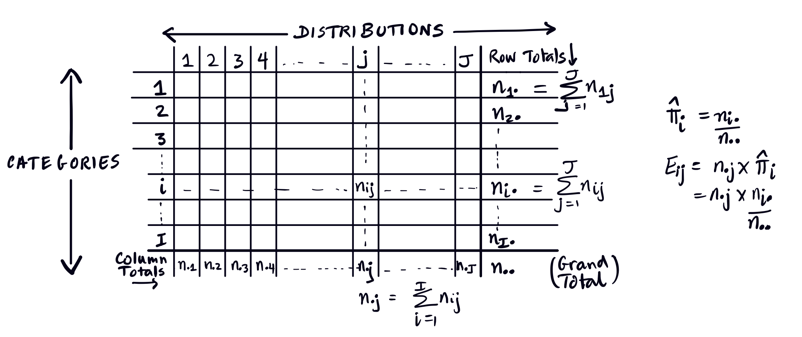

Chi-square Test of Homogeneity
Introduction
We use the Chi-square test for Homogeneity in a situation when we have independent observations from a number of multinomial distributions, say \(J\) distributions, each with \(I\) cells (categories). That is, we have \(J\) independent samples from \(J\) different multinomial distributions, each with \(I\) cells. We want to test if the underlying probabilities of the cells are the same across the distributions, that is we test the homogeneity of the multinomial distributions.
Sanditon
Sanditon is a “famously unfinished novel” by Jane Austen (PBS Masterpiece 2025). She began work on the novel in January 1817 and stopped in about mid-March - probably because she was ill, having completed only twelve chapters by then. It was first published in 1925 as Fragment of a Novel Written by Jane Austen, January–March 1817 (Wikipedia contributors 2024). Of course, many authors have tried to finish the book, including Jane Austen’s own niece, Anna Austen Lefroy! The most famous “continuation” (it seems they didn’t call it fan fiction) is Sanditon: Continued and Completed by Another Lady - the other lady was an Australian named Marie Dobbs. And there are many more that you can read about online. The example below deals with the continuation written by “Another Lady” a.k.a. Marie Dobbs.
Example 1 This example is adapted from the text (section 13.3):
When the novelist Jane Austen died, she left the novel Sanditon unfinished. “Another Lady” finished the novel, attempting to emulate Austen’s style. Our question is whether the word distributions are the same across the following books:
| Word | Sense & Sensibility | Emma | Sanditon I (Austen) | Sanditon II (Another Lady) |
|---|---|---|---|---|
| a | 147 | 186 | 101 | 83 |
| an | 25 | 26 | 11 | 29 |
| this | 32 | 39 | 15 | 15 |
| that | 94 | 105 | 37 | 22 |
| with | 59 | 74 | 28 | 43 |
| without | 18 | 10 | 10 | 4 |
| Total | 375 | 440 | 202 | 196 |
Here \(J = 4\) and \(I = 6\).
Let \(\pi_{ij}\) denote the probability of the \(i\)th cell in the \(j\)th distribution (for the Sanditon example, this is the probability of word \(i\) in book \(j\)). The null hypothesis is
\[H_0 : \pi_{i1} = \pi_{i2} = \pi_{i3} = \ldots = \pi_{iJ} = \pi_i, \quad i = 1, 2, \ldots, I\]
that is, the cell probabilities are the same across all the distributions, subject to the constraint \(\displaystyle \sum_{i=1}^{I} \pi_{ij} = 1\). The alternative \(H_1\) is that at least one proportion is different for at least one row.
We can think of each sample as arising from a multinomial distribution. For example, from Sense and Sensibility, we have a multinomial distribution with \(n = 375\), \(m = 6\), and probabilities \(\pi_{a,1}, \pi_{an,1}, \pi_{this,1}, \ldots\). The null hypothesis says these probabilities are the same for all four works, and can be denoted by \(\pi_{a}\). This determines \(\omega_0\), and the MLE over this parameter space is determined the usual way for multinomial distributions. Note that under the alternative, the distributions are not constrained to be the same.
Theorem 1 Under the null hypothesis the MLEs of the cell parameters \(\pi_1, \pi_2, \ldots, \pi_I\) are given by
\[\hat{\pi}_i = \frac{n_{i.}}{n_{..}} = \frac{\text{row sum}}{\text{total}}\]
Proof. (This is left as an exercise.)
We will test this hypothesis using Pearson’s chi-square statistic \(X^2\), since under the null hypothesis, this is a goodness-of-fit test: Do the data fit the hypothesis that all the distributions have the same cell probabilities?
The degrees of freedom for our test equals the number of independent counts (\(\dim \Omega\)) minus the number of independent parameters estimated from the data (\(\dim \omega_0\)), where \(\Omega\) and \(\omega_0\) are as previously defined. Since there are \((I-1)\) independent counts for each of the \(J\) distributions, this means that there are \(J \times (I - 1)\) independent counts, and also, we estimate \((I-1)\) parameters under the null. This gives:
\[ df = \dim \Omega -\dim \omega_0 = J \times (I - 1) - (I - 1) = (J - 1) \times (I - 1) \] Let’s look at the information in a table:

The expected count (under \(H_0\)) for cell \((i, j)\) is
\[ E_{ij} = n_{.j} \times \hat\pi_i = \frac{n_{.j} \, n_{i.}}{n_{..}} \]
which is the total for the \(j\)th distribution multiplied by the MLE of \(\pi_i\). Using Pearson’s chi-square statistic,
\[X^2 = \sum_{i=1}^{I} \sum_{j=1}^{J} \frac{(O_{ij} - E_{ij})^2}{E_{ij}} = \sum_{i=1}^{I} \sum_{j=1}^{J} \frac{(n_{ij} - n_{.j} n_{i.} / n_{..})^2}{n_{.j} n_{i.} / n_{..}}\]
Under the null, \(X^2 \sim \chi^2_{df}\) with \(df = (J-1) \times (I-1)\). Note that the test is one-sided by nature: only larger values of \(X^2\) count against the null because the statistic is a sum of squared deviations of what we observe from what we expect. That is, this test is essentially a goodness-of-fit test. If this value is too large, this means that the test statistic is far out in the right tail of the distribution, and the \(p\)-value will be small. We don’t consider small values of the statistic that would be in the left tail since those indicate that the observed and expected values are very close together. Looking at the left tail implies we are worried that the fit is too good, which is not something we usually check.
Back to Sanditon
Now let’s do a chi-square test of homogeneity on the four books, to see if they appear to be from the same multinomial distribution.
The observed and expected (in parentheses) counts are:
| Word | Sense & Sensibility | Emma | Sanditon I (Austen) | Sanditon II (Impersonator) | Total |
|---|---|---|---|---|---|
| a | 147 (159.8) | 186 (187.5) | 101 (86.1) | 83 (83.5) | 517 |
| an | 25 (28.1) | 26 (33) | 11 (15.2) | 29 (14.7) | 91 |
| this | 32 (31.2) | 39 (36.6) | 15 (16.8) | 15 (16.3) | 101 |
| that | 94 (79.8) | 105 (93.6) | 37 (43) | 22 (41.7) | 258 |
| with | 59 (63.1) | 74 (74) | 28 (34) | 43 (33) | 204 |
| without | 18 (13) | 10 (15.2) | 10 (7) | 4 (6.8) | 42 |
| Total | 375 | 440 | 202 | 196 | 1,213 |
To find the Pearson’s chi-square statistic \(X^2\), we calculate the contribution of each cell using the formula:
\[ X^2 = \sum_{i=1}^I\sum_{j=1}^J \frac{(O_{ij} - E_{ij})^2}{E_{ij}} \]
The table below shows the calculated \(\dfrac{(O_{ij} - E_{ij})^2}{E_{ij}}\) values for each \((i,j)\)th cell, and the larger values are shown in bold:
| Word | SS | E | Sand1 | Sand2 |
|---|---|---|---|---|
| a | 1.030 | 0.013 | 2.580 | 0.003 |
| an | 0.349 | 1.488 | 1.139 | 13.899 |
| this | 0.019 | 0.152 | 0.197 | 0.107 |
| that | 2.542 | 1.392 | 0.828 | 9.298 |
| with | 0.262 | 0.000 | 1.050 | 3.056 |
| without | 1.937 | 1.799 | 1.292 | 1.144 |
Total Chi-Square Statistic: \[\chi^2 \approx 45.58\]
The \(df = (6-1) \times (4-1) = 15\). The p-value is \(P(X^2 \geq 45.58 \mid X^2 \sim \chi^2_{15}) = 0.00006\), so we reject \(H_0\) and conclude that the word distributions are not homogeneous across the four works. You can actually see that for the words an and that, the contribution to the chi-square statistic from the non-Austen book seems particularly large, whereas most of the other differences are small. It seems that Marie Dobbs didn’t have quite the same writing style as Jane Austen, and a stylometric analysis seems to indicate this.
Note that the null hypothesis helped us set up what was essentially a chi-square goodness-of-fit test: do the observed data fit the distribution specified by the null? We will do something similar for the chi-square test of independence.